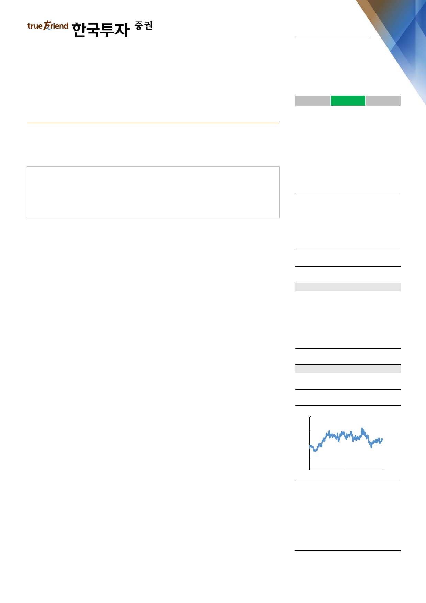

실적 Review
2019. 4. 26
SK이노베이션(096770)
하 회
부 합
영업이익의 컨센서스 대비를 의미
상 회
묵묵히 걸어가는 길
재고평가손실이 이월되며 정유부문 적자 지속
그러나 낮은 원가가 다시 이월되며 2분기 실적은 대폭 개선될 전망
배터리와 분리막의 가파른 성장에도 주목할 시점
Facts : 유가회복 대비 실망스러운 실적
1분기 영업이익은 컨센서스 수준인 3,311억원으로 전년동기대비 54% 감소하고
전분기대비 흑자전환했다. 당사 추정치 대비로는 12% 상회했는데, 이는 석유화학
부문의 판매량 증가와 재고평가이익으로 영업이익이 전분기대비 28% 개선되었기
때문이다. 한편 유가회복에도 불구하고 작년 12월에서 올해로 이연된 재고평가손
실로 인해 1분기 정유부문의 재고평가손실은 228억원을 기록했다. SK이노베이션
은 현 수준의 유가가 지속될 경우 1,500억원 수준의 재고평가이익이 2분기에 인
식될 것으로 전망했다.
Pros & cons : 높은 원가 1분기에 투입…. 낮은 원가 2분기로 이월
정유부문은 영업적자 63억원으로 당사 추정치를 109억원 하회했다. 10월 및 11
월의 높은 유가가 투입되며 한달후행 정제마진도 1분기 평균 대비 2.5달러/배럴
낮은 5.4달러/배럴을 기록한 것으로 추정된다. 2분기에는 반대로 재고평가이익뿐
만 아니라 낮은 유가가 지연되어 투입되며 한달후행 정제마진 대비 실질마진은 더
욱 확대될 전망이다. 4월 평균 한달후행 정제마진은 8.1달러/배럴로 SK이노베이
션의 1분기 평균 대비 50% 이상 개선된 것으로 추정된다. 한편 전기차 배터리 영
업적자는 869억원으로 전분기대비 238억원 축소되고 배터리 분리막이 주력제품
인 소재부문의 영업이익은 305억원으로 전분기대비 20% 개선되었다. SK이노베
이션은 실적 컨퍼런스를 통해 배터리 수주잔고가 430GWh로 50조원 이상의 수주
를 확보했고 배터리부문이 2021년에 손익분기점에 도달할 것이라 전망했다.
Action : 잠재 상승여력은 하반기 및 2020년에 현실화 전망
유가회복을 감안하면 실망스러운 1분기 실적이다. 그러나 매수기회라 판단하는 이
유는 세가지다. 첫째, 2분기 영업이익은 큰 폭으로 개선될 전망이다. 낮은 원가가
2분기로 이월되며 재고평가이익에 한달후행 정제마진 확대가 가세된다. 둘째, 국
제해사기구(IMO)의 긍정적 환경변화와 맞물려 SK이노베이션의 신규 탈황설비
(VRDS)가 내년 2분기에는 가동될 전망이다. 마지막으로 배터리 및 분리막의 가
파른 성장은 주가에 미반영된 상태다. 중장기적 re-rating 요인에 집중할 시기다.
매수(유지)
목표주가: 252,000원(유지)
Stock Data
KOSPI(4/24)
주가(4/24)
시가총액(십억원)
발행주식수(백만)
52주 최고/최저가(원)
일평균거래대금(6개월, 백만원)
유동주식비율/외국인지분율(%)
주요주주(%) SK 외 2 인
국민연금
2,201
193,500
17,892
92
225,500/166,500
43,615
60.6/38.4
33.4
9.7
Valuation 지표
PER(x)
PBR(x)
ROE(%)
DY(%)
EV/EBITDA(x)
EPS(원)
BPS(원)
2018A
9.8
0.9
9.1
4.5
6.6
18,267
205,544
2019F
9.5
0.9
9.7
4.1
5.5
20,436
217,208
2020F
5.8
0.8
14.5
4.9
3.7
33,539
241,211
주가상승률
절대주가(%)
KOSPI 대비(%p)
1개월
(1.0)
(1.7)
6개월
(6.5)
(11.5)
12개월
(3.0)
7.7
주가추이
(천원)
260
220
180
140
100
Apr-17
자료: FnGuide
Apr-18
Apr-19
이도연
daniel.dy.lee@truefriend.com